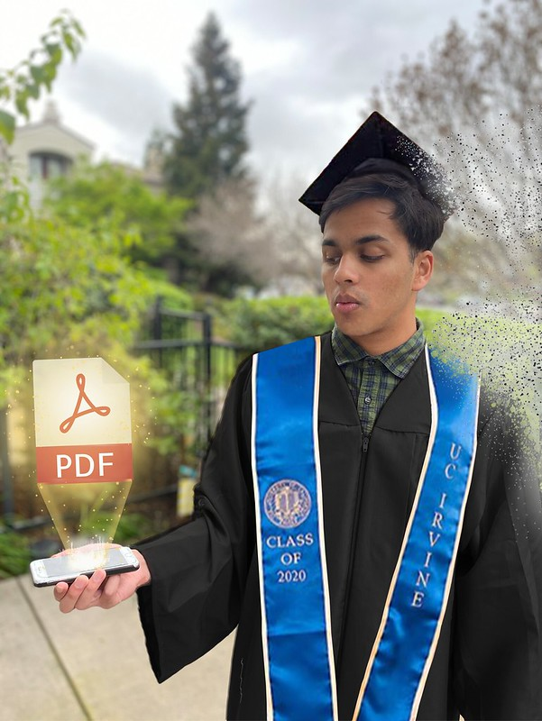
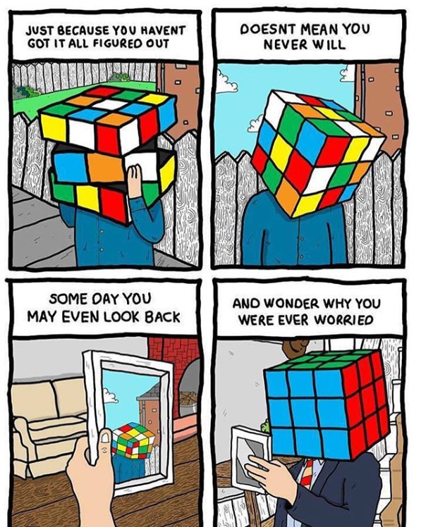

"Not Now" doesn't at all mean "Not Ever"
Posted on June 21, 2020 at 3:21 PM

It’s been a week since I graduated from UC Irvine with my bachelors degree and yet it seems like everything is still very much up in the air.
Due to COVID-19, I'm going to be emailed a PDF containing my degree. My commencement was an online recording that contained my name and my photo at 34:56 --> UC Irvine School of C.S. Commencement Video (Also embedded below). As the photo above shows, it quite literally felt like the sense of accomplishment was slowly disintegrating for my graduating class. It’s not like I had an exact idea of what to expect after graduation, but that was definitely an anticlimactic conclusion to the four years that were supposed to help me “figure out life,” whatever that’s supposed to mean. Yet here I was graduating in the middle of a national pandemic with the worst job market since the great depression. For 20-24 year olds like me, the unemployment rate has risen up from 3-4% range to 25.7% according to the Bureau of Labor Statistics.
I’ve applied to over 100 companies in the last month alone. After an automatic reply of “Thank you for applying,” the majority of these companies didn’t even get back to me with a decision. Those that did would explain how I was just not the right fit for the role and that for now, they are going to go with a different candidate.
Bottom line has always been “For now, not you.” For a while, I realize now I have been putting too much focus on the latter half of that sentence. Why would so many people not want me? I saw my friends getting positions and it hurt that I had nothing. It started affecting my mental health where I frantically applied to positions day and night with no results to show for it. I had just graduated from a prestigious university and by the end of this week I have been grumpy. Weird thoughts started entering my mind and I even started questioning whether or not going to college helped me in my career.
Today morning I snapped out of it, and realized it’s time for me to shift my focus onto the first half of that sentence. Companies must add “For now” at the beginning of that sentence for a reason beyond trying to protect my feelings. The company doesn’t know much about me except what I’ve told them about who I am as of right now. They don’t know who I’m going to be or what I can do in the future. So it’s time for me to do the things they don’t know I can do. I have to be patient and persevering while focusing on my passions. It’s time to code. The goal is to create a website that I can blog on while constantly updating who I am now. Because there will come a day very soon when one of those companies will realize my growth.
"Life's challenges are not supposed to paralyze you, they're supposed to help you discover who you are."
I’ve limited myself to applying to 10 companies every day and once I’m done with that, I work on my website. If I want to take a break from working on my website, I watch machine learning videos for my coursera class to review those concepts. I spend my free time working out and blogging or occasionally doing digital art and paintings. I’ve also started developing a section on my website dedicated to my creative projects, some of which are open source projects I’ve decided to tackle. I must keep my coding skills sharp and take advantage of the free time I get being unemployed.
Since this is my first blog, I just wanted to say that one day I hope I can go back and see my growth as a person in terms of my career and also in terms of my writing style, life perspective, and personal character development.

Reception - Donald Bren School of Information & Computer Sciences